Payroll – Account Settings
Use Payroll – Account Settings to configure how payroll is processed in CA Cloud Desk: open Settings from the Dashboard, switch to the Payroll tab, and then open the Account Settings card to review and update master payroll preferences.
Path
Step-by-step instructions
Open Dashboard and go to Settings
Log in to CA Cloud Desk and make sure you are on the main Dashboard. On the top-right corner, click on your profile name to open the drop-down and select Settings.
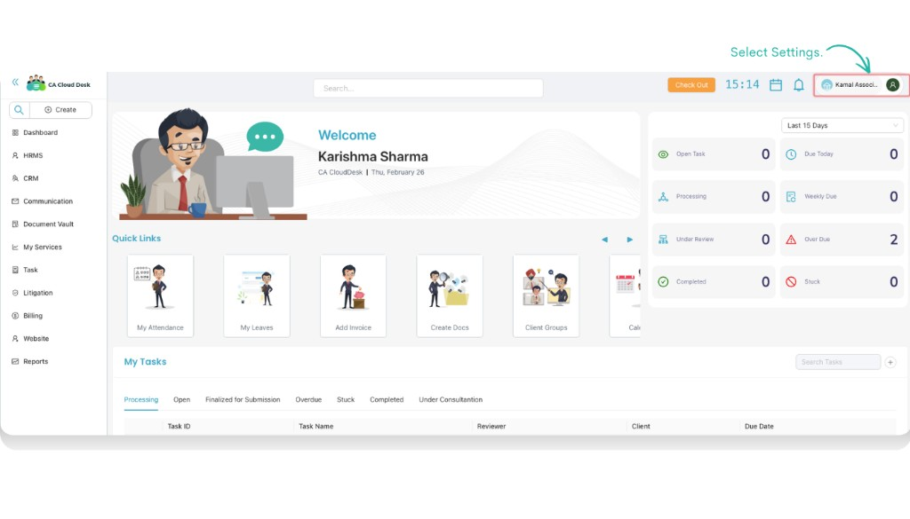
Select the Payroll tab
Inside Settings you will see multiple tabs such as Profile, HRMS, Payroll, Import Utility, Notification, Accounts, Services, and Settings. Click the Payroll tab to open payroll-specific options.
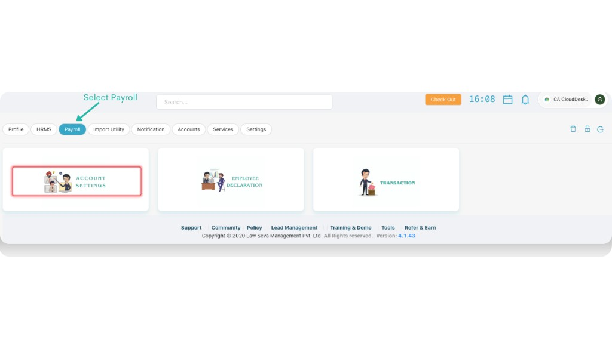
Open the Account Settings card
Under the Payroll tab, click on the Account Settings card. This opens the main payroll configuration area where you define how salaries are calculated and processed.
View payroll configuration sections
After selecting Account Settings, you will see the main payroll configuration sections on the page: DropDown Setting, Salary Ingredients, Constant Deduction, Pay Details, Overhead Expense, and Manual Costing. You should first start with the DropDown Setting section before configuring the remaining options.
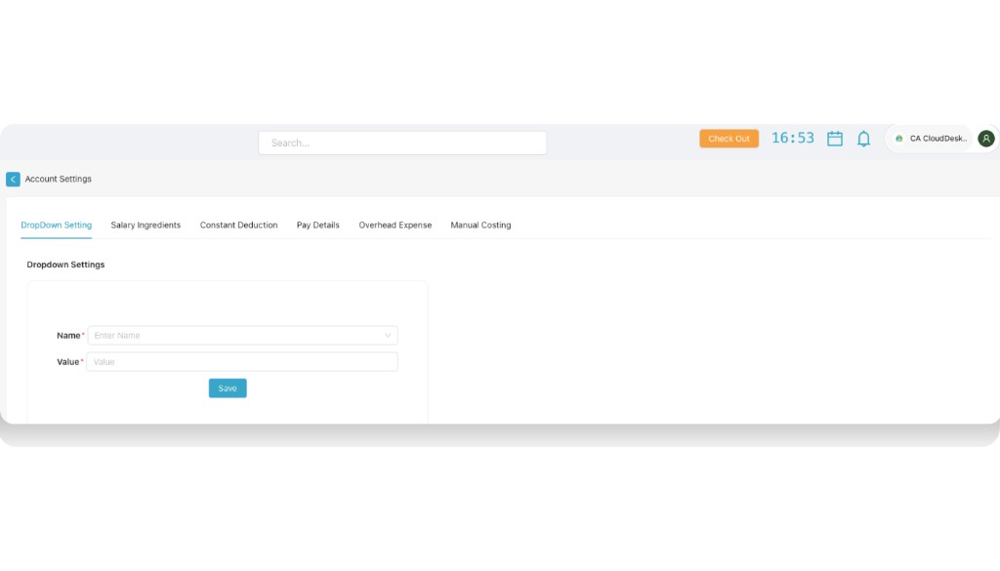
A. Dropdown Settings
In the DropDown Setting tab, use the Name and Value fields to define reusable dropdown lists. You can configure: Additional Pay, Expense Type, Overhead Expense, Payment Options, and Variable Deductions. Additional Pay covers extra payments like Bonus, Gratuity, Festival Bonus, Food Allowance, Overtime Pay, and Performance Bonus. The other dropdown settings—Overhead Expense, Payment Options, and Variable Deductions—work the same way: choose the Name (dropdown type) and add Value entries that will appear in other payroll screens.
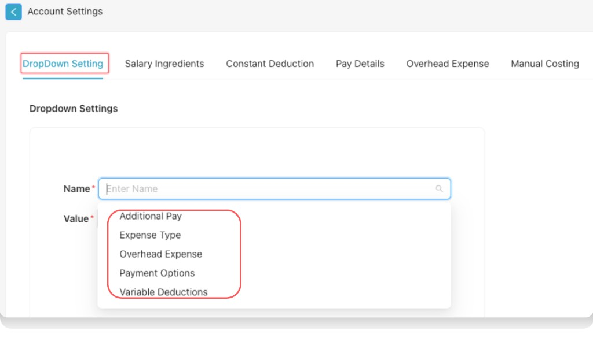
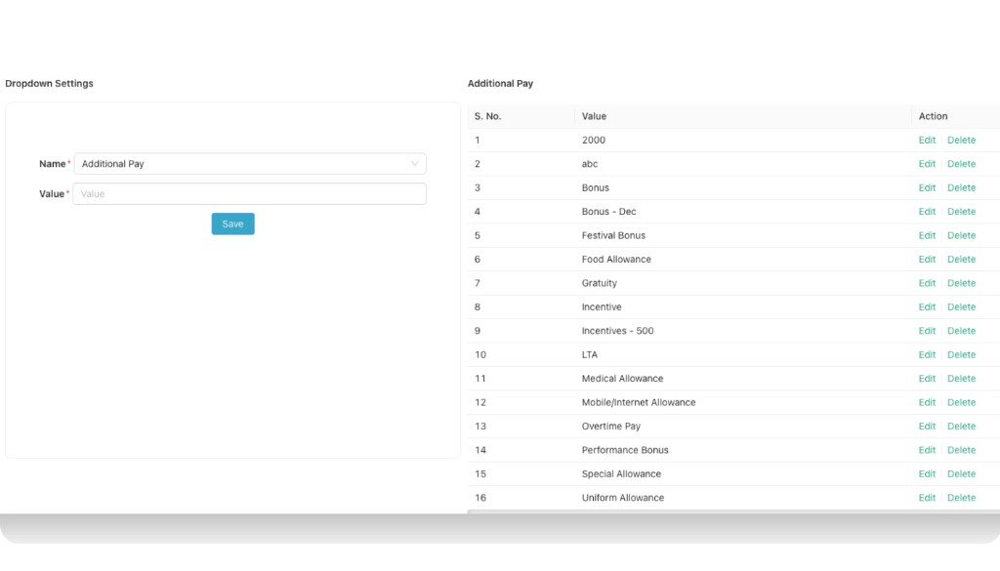
B. Expense Type
Expense Type is money spent by an employee for company work that the company later pays back. In the DropDown Setting tab, select Name as Expense Type and add Value entries for each type of reimbursable expense. Examples you can configure include:
- 1. 2 Wheeler Expenses
- 2. Cab Expenses
- 3. Four-Wheeler Usage
- 4. GB SIR
- 5. Local Conveyance
- 6. Lodging & Accommodation
- 7. Meals & Food Expenses
- 8. Miscellaneous Expenses
- 9. Mobile and Internet Reimbursements
- 10. Parking & Toll Charges
- 11. Two-Wheeler Usage
You can add more expense types as needed and use Edit or Delete in the list to manage existing values.
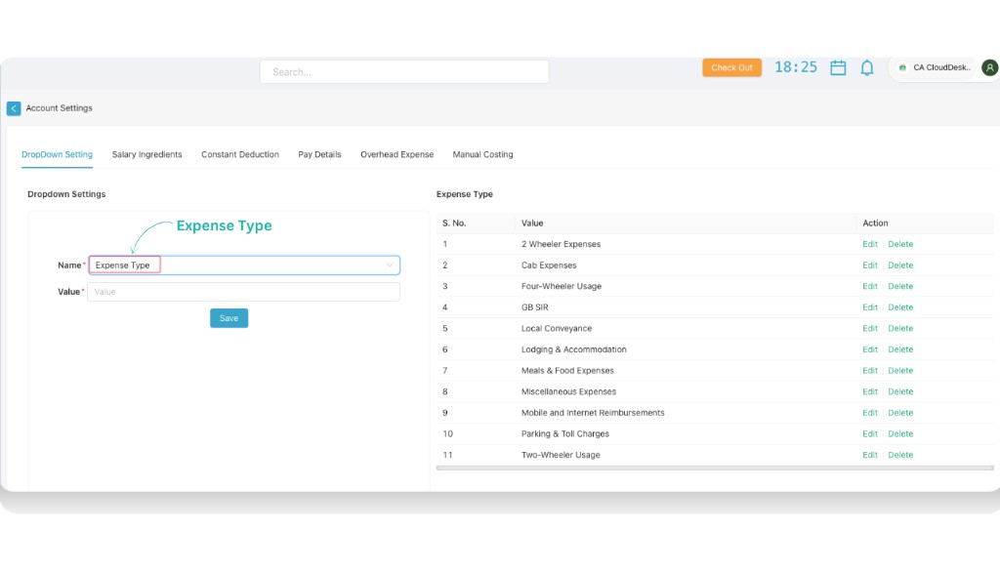
2. Salary Ingredients
Salary Ingredients are the different components that make up an employee's total salary package. Each component is added or deducted to calculate the final take-home salary.
Click the + (plus) icon to Add Salary Ingredients. The Add Salary Ingredients form includes the following options:
- Name* — Name of the salary component (e.g. Basic, DA, HRA).
- Employee Head* — Corresponding head as shown to the employee.
- Order* — Display order of the component.
- Component Type* — e.g. Value Based or Formula Based.
- Nature* — e.g. MONTHLY.
- Nature type — Sub-type or nature option as per the dropdown.
- Tax Status* — Whether the component is taxable (Yes/No).
- Financial Year — Applicable financial year (optional).
- Show in Payslip or not — Checkbox to show or hide on the payslip.
After filling the fields, click Save to add the salary ingredient.
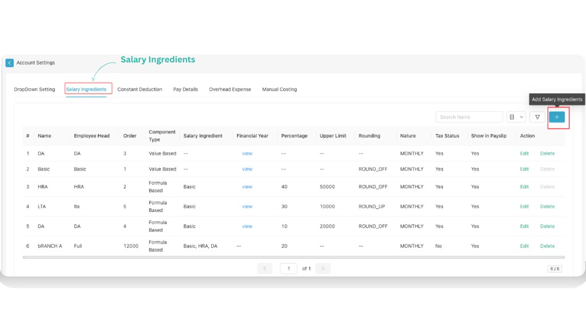
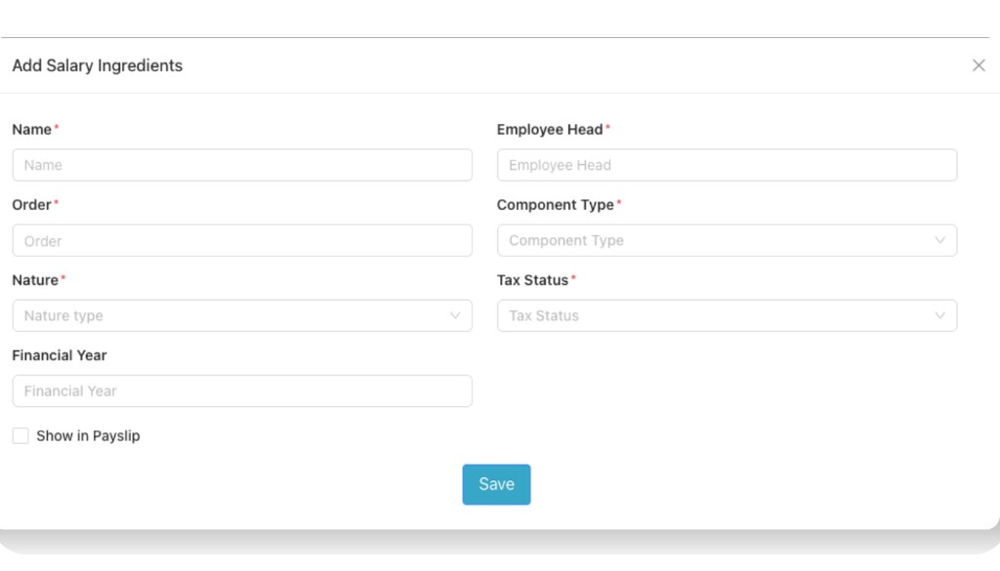
3. Constant Deductions
Constant Deduction is a fixed deduction applied to an employee's salary every payroll cycle, such as PF or insurance, which remains unchanged unless modified.
From the + (add plus) button you can add constant settings. Add a constant deduction by filling the following details:
- Name*
- Employee Head*
- Start Month* — Select month
- Deduction Type* — e.g. Deduction / Value Based
- Applicable on
- Percentage Value
- Max Value
- Rounding
- Type* — Nature type (e.g. MONTHLY)
- Tax Status
- Order*
- Attach with Tax Declaration — checkbox
- Show in payslip — checkbox
- Financial Year
Then click Save to add the constant deduction.
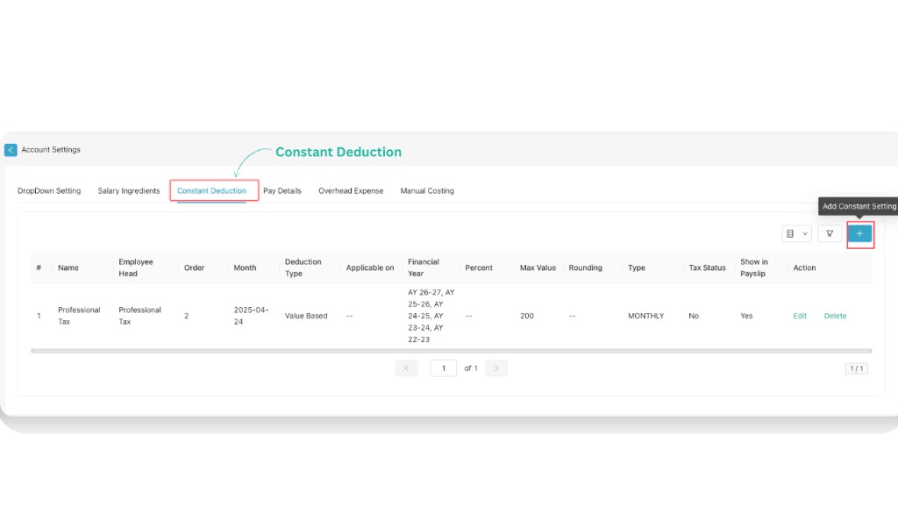
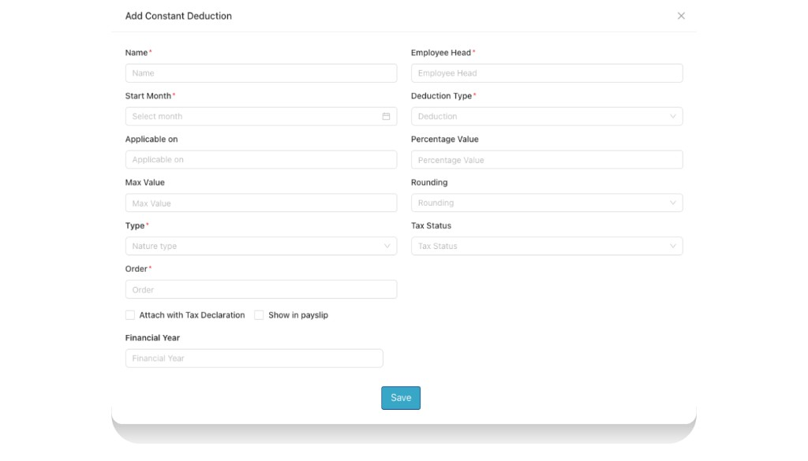
4. Pay Details
From the Pay Details tab you can add the pay details of each employee by clicking on the + icon. Pay details show the complete salary structure of an employee including earnings, deductions, gross salary, and net payable amount.
Add the following details for the employee:
- Valid From* — Month from which these pay details are applicable.
- Employee* — Select Employee.
- Payment Mode* — e.g. Bank Account / NEFT / other modes.
- Account Name
- Bank Account Number
- IFSC Code
- PAN No
- UAN No
- Aadhar No
- Constant Deductions — link constant deductions defined earlier.
- Component — select salary components (Name and Value) such as DA, Basic, HRA, LTA, Branch A etc.
- Gross Salary
- Notes — any additional remarks.
After filling all details, click Save to store the employee’s pay details.
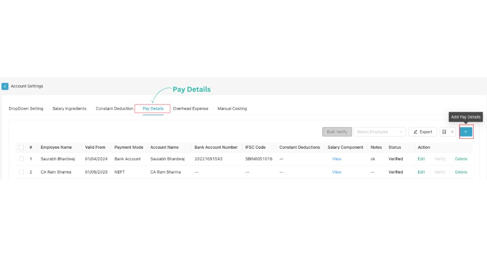
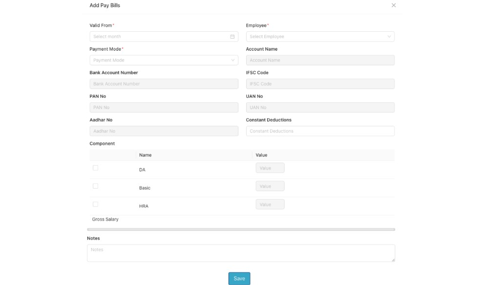
Confirm earnings, deductions, and statutory settings
Go through the earnings and deduction heads, along with statutory preferences such as PF/ESI/Professional Tax or TDS options. Make sure they align with your organisation’s policies so that payroll calculations and statutory reports are accurate.
Save changes
After updating any fields in Account Settings, use the Save or Update button at the bottom of the screen. The new configuration will apply to upcoming payroll runs and related reports.
Key options in Account Settings
While the exact layout may vary by version, you will typically find these groups of options in Payroll – Account Settings. Use them to keep your payroll configuration consistent and compliant.
Video Tutorial
Watch the Payroll – Account Settings walkthrough from 0:00 to 7:14. It follows the same flow described above: open Settings from Dashboard, select the Payroll tab, open Account Settings, and review key configuration options.